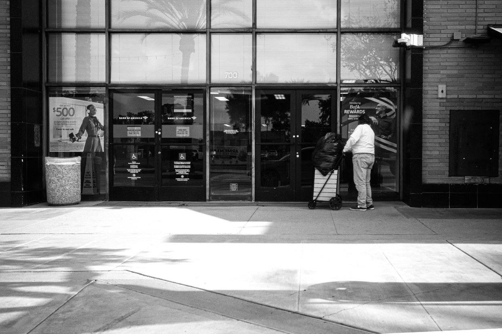
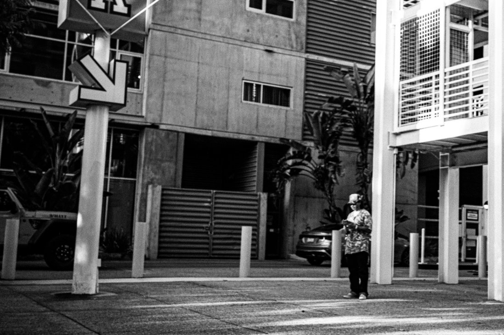
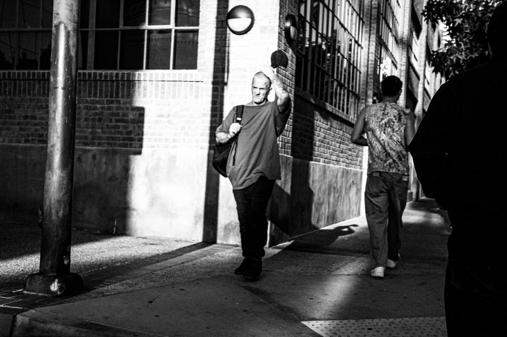
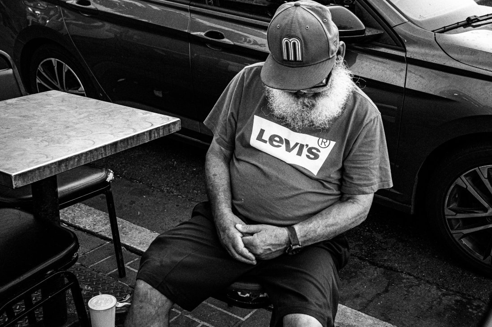
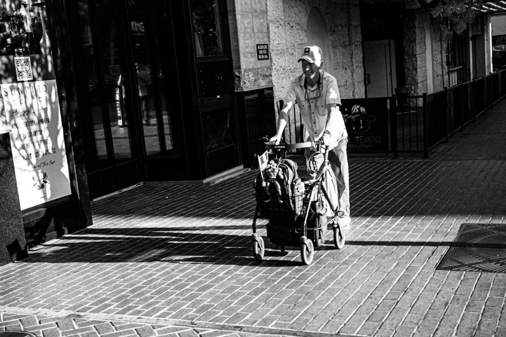
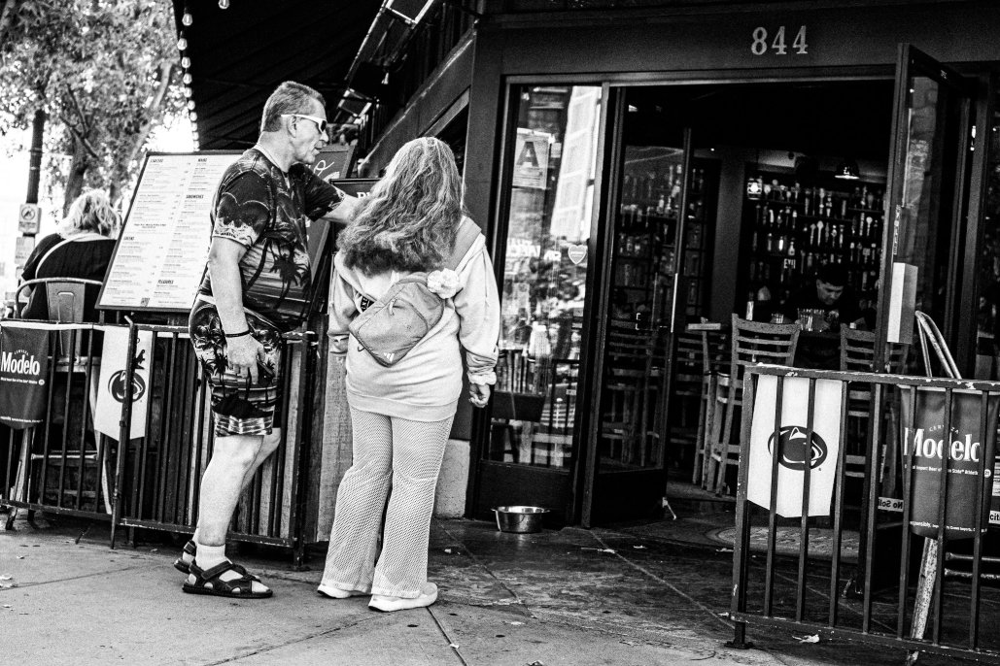

PRISM THIEF
Los Angeles street photography by Matt Ciaglia.
The banal, shot until it turns graphic — mostly after dark.
Selected Work
From the ongoing body of work, Superbanalism — the ordinary corners of the city most people drive past.












About
Matt Ciaglia is a street photographer based in Los Angeles, working under the name Prism Thief. He shoots the city the way it actually looks: strip malls, bus stops, last light on stucco, strangers mid-errand, waiting for the moment the ordinary turns graphic. He works in digital, mostly at night, with his trusty Ricoh GR IIIx.
Superbanalism, his ongoing body of work, is built on one bet: the most banal corner of LA is a complete subject if the light is honest. He is passionate about Japan and travel, and returns to Japan whenever he can. His work will appear in Al-Tiba9 Contemporary Art Magazine ISSUE23 in February 2027. He lives in Whittier, California.
I don't stage anything. I walk the city at night with a camera that fits in a pocket and I wait — at bus stops, outside convenience stores, along the boulevards — for the second when what's already there lines up. The pictures aren't about spectacle. They're about paying attention to the places everyone passes through and nobody looks at twice. If a frame works, it's because the light told the truth and I was standing in the right place when it did.
Selected & Upcoming
- IPEX 2027Kyoto, Japan — October 2027
- Al-Tiba9 Magazine, ISSUE23Publication — February 2027
- Rotterdam Photo 2027Rotterdam, Netherlands
- Arts in Square Photobook Vol. 3Below Grand Gallery, New York
- Remembering Concrete DreamsEast LA Film Shop, Los Angeles — November 2026
SUPERBANALISM
A zine of the ordinary, shot straight. Vol. 1 is in the works.
Get notified when it drops.